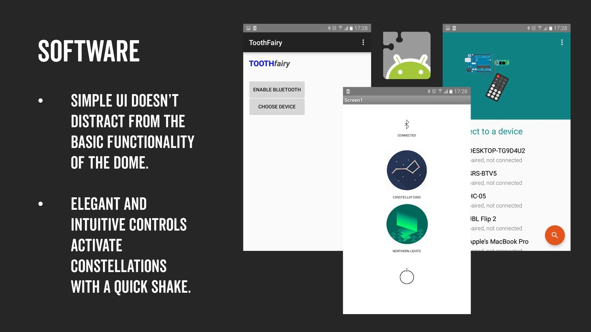
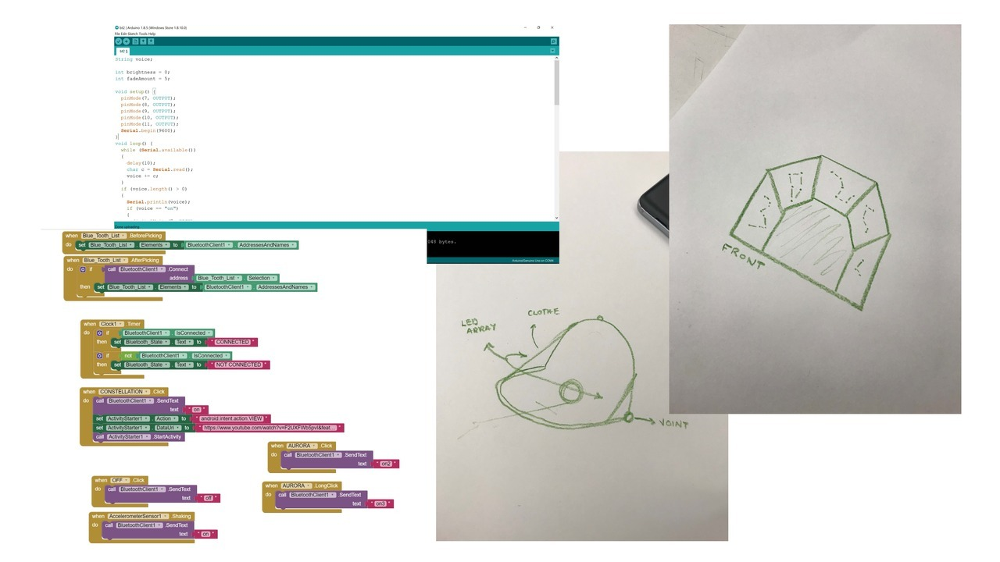
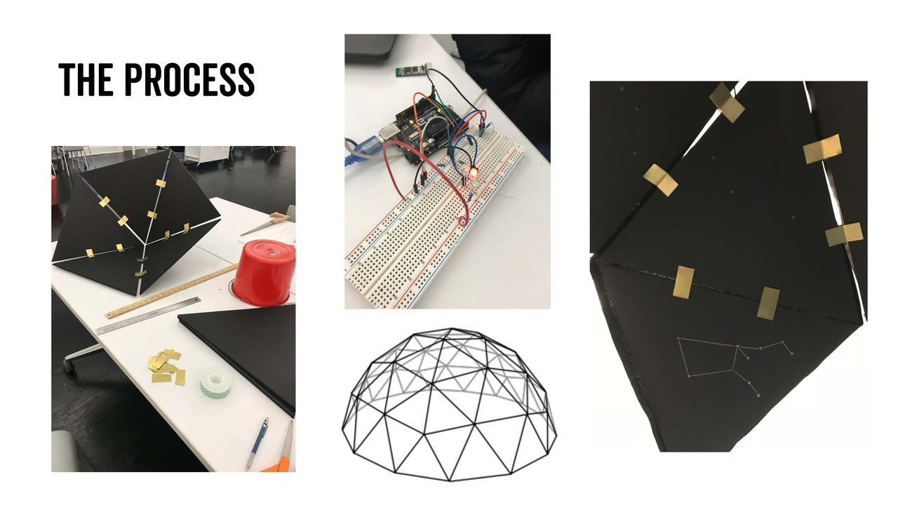
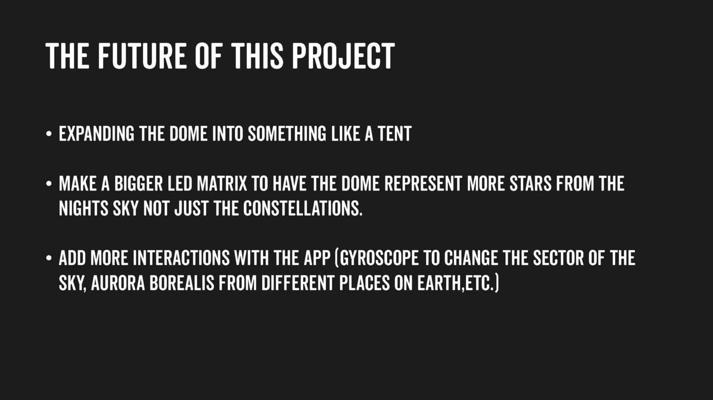

A relaxing chandelier with LED lights mimicing the patterns of constellations in space. The lights are controlled by an arduino which is connected to a mobile app via bluetooth that enables the user to control how the LED bulbs light up. The app also plays soothing ambient noises to further relax the user.
The software system was made using Aruduino and MIT App Inventor. The hardware was made out by connecting LED bulbs, metal sheets as well as black thermocol boards
  